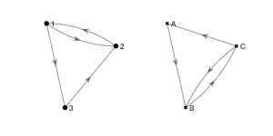
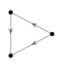
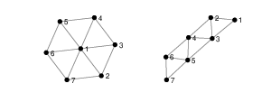

6. Isomorphic Graphs#
We say that two graphs are isomorphic if they have the same network structure. Graphs \(G_1\) and \(G_2\) are isomorphic if there exists a matching between their nodes such that two nodes are connected by an edge in \(G_1\) if and only if their corresponding nodes are connected by an edge in \(G_2\).
Definition
An isomorphsim between two graphs \((V_1, E_1)\) and \((V_2, E_2)\) is a bijection (one-to-one correspondence)
such that \((v_1, v_2)\) is in \(E_1\) if and only if \((f(v_1), f(v_2))\) is in \(E_2\).
If an isomorphism exists between two graphs, we say that the graphs are isomorphic.
6.1. Example#
Find an isomorphism between the following two graphs.

Solution
These two graphs are isomorphic under the isomorphism \(f\colon \{1, 2, 3\}\to \{A, B, C\}\) where \(f(1) = C, f(2) = B \) and \(f(3) = A\).
6.2. Question 1#
1. Find an isomorphism between the following two directed graphs:

2. Find a subgraph of the egg-laying circuit isomorphic to the directed graph below.

3. Use NetworkX functions subgraph and is_isomorphic to confirm your answer to 2.
6.3. Example#
How many simple directed graphs are there with 3 nodes and two edges?
Solution
There are 4. Any other simple directed digraph with 3 nodes and 2 edges is isomorphic to one of these.

6.4. Question 2#
Draw all simple directed graphs with 3 nodes and 3 edges.
6.4.1. Isomorphism from Adjacency Matrix#
Given two graphs \(G_1\) and \(G_2\), we can check whether they are isomorphic by calculating the adjacency matrix of every permutation of the nodes of \(G_1\). If one of them is equal to the adjacency matrix of \(G_2\), then the two graphs are isomorphic.
There are \(n!\) permutations of \(n\) nodes, so even for relatively small graphs, checking for isomorphism can take a long time. There are \(2.4\times 10^{24}\) possible permutations of a graph with 20 nodes.
6.5. Question 3#
Write down all \(3! = 6\) adjacency matrices of the following digraph.

6.6. Graph Invariants#
Fortunately, the problem of checking whether two graphs are not isomorphic is often easier. For example, if \(G_1\) has 5 nodes and \(G_2\) has 6 nodes, they certainly are not isomorphic. A graph property which is preserved by isomorphism is called a graph invariant.
Some examples of graph invariants:
Number of nodes
Number of edges
Maximum node degree
Number of triangle (3-cycle) subgraphs
Number of connected components
6.7. Question#
1. Show that the following pairs of graphs are not isomorphic by finding an invariant that they do not share. 
2. Write down two more graph invariants.